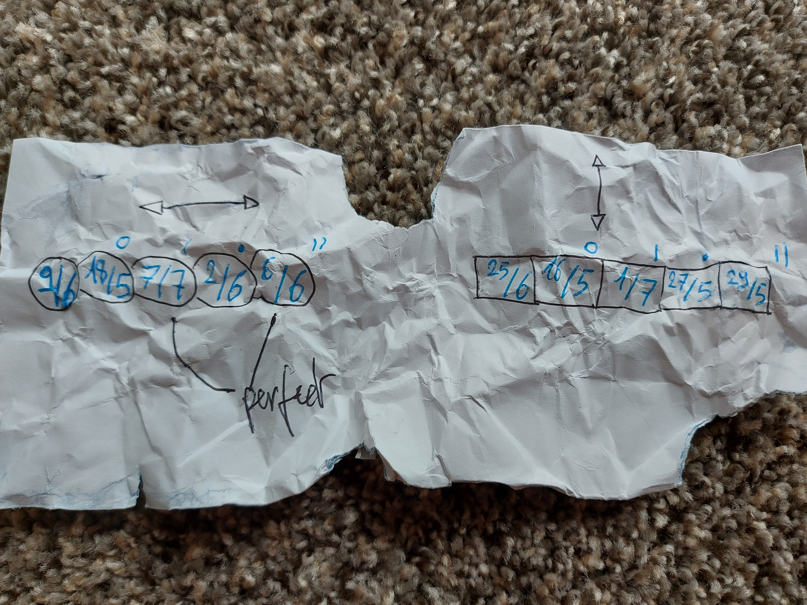

La région de Bruxelles-Capitale ne dispose pas de caserne de la protection civile belge sur son territoire.
Un papier du 8 octobre 2017 indique néanmoins qu'il reste 2 unités opérationnelles.
Quelle est la distance de l'unité la plus proche ?
Bravo tu as fini ta première couleur !!!
Tu as normalement 10 informations en lien avec la couleur du jour !
Ca pourra ...
....
.................
Es tu deja prete pour cela ?
......................................................
Bon.
Ca fait quelques jours que j'ai trouvé ça dans de vieux grimoires d'énigmes :
Peut être que ça peut t'aider à quelque chose ?
Il y a encore du travail mais c'est peut être le début d'un grand indice !